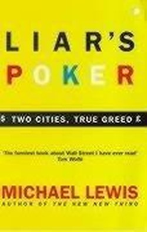

Library › Money & Finance
Liar's Poker — Summary & Key Lessons

He was paid to exaggerate to strangers, quit at 28, and wrote the funniest, darkest book about Wall Street ever published.
📖 OPEN THE FULL INTERACTIVE BREAKDOWN →🌐 Read it in Hindi, Hinglish, Gujarati, Tamil & 22 more languages — free, with audio.
💡 The Big Idea
Liar's Poker is Wall Street's great insider satire: Lewis joins Salomon Brothers' legendary bond desk (1985), survives the training program (taught by managers who'd rather be trading), lands in London, and watches the mortgage-backed securities revolution (Lewis Ranieri's desk) print money while the firm's culture (the title game of bluffing with dollar bills; Gutfreund's million-dollar challenge to John Meriwether) rewards deception, throughput and nerve over skill. The book's lasting contribution: it names the incentive design (salesmen paid to move product, traders paid to cross customers, information asymmetry as the product) that made the 1980s bull market, and, read in hindsight, predicted 2008 (mortgage securitization's second act). Lewis quit in 1988, telling the story instead.
🧠 The 8 Key Lessons
Lesson 1: The Title Game Is the Business Model
Liar's Poker
The book's namesake game (bluffing about serial numbers on dollar bills) is the desk's philosophy in miniature: profits from out-bluffing counterparties with asymmetric information. When your revenue model rewards deceiving the counterparty, talent migrates toward deception and clients become prey. The due-diligence lesson: understand whether your counterparty profits from your success or from your error; the second kind is a hunter.
📖 Example: Gutfreund's $1 million challenge (a single game against Meriwether) captures the ethos: stakes high enough to matter, outcome decided by nerve and bluff, honor to the better liar. Read the full example →
⚡ Do this: In every major deal, write down how your counterparty gets paid. If their best outcome is your worst one, price that in: documentation, escrow, or walk.
Lesson 2: Train People in the Trenches, Not the Classroom
The Training Program
Salomon's famous training program (weeks of lectures by reluctant instructors) mattered less than the sink-or-swim desk placement after it: real learning happened by answering phones for screaming traders. The management lesson: formal training is marketing; apprenticeship is education. Structure the apprenticeship deliberately (who answers to whom, what mistakes are survivable) or the trenches will teach lessons you didn't choose.
📖 Example: Lewis's classmates recall the program's absurdities fondly, but their actual educations began the day a trader called them by name: from then on, every phone call was a graded exam. Read the full example →
⚡ Do this: Design your new hires' first 90 days as apprenticeship: real work, a named mentor, survivable mistakes, and a weekly debrief. Classroom hours are the brochure, not the course.
Lesson 3: Innovation Profits Are Temporary; Architecture Persists
Ranieri's Mortgage Machine
Salomon's mortgage desk invented securitization's golden age and printed money while the product was novel and the desk had the best information. Competitors copied, margins compressed, and the machine kept running (until 1989's abuses and eventually 2008's catastrophe). The lesson: financial (or product) innovation earns temporary rents; the durable asset is the architecture (distribution, risk system, client trust) it leaves behind, for good or ill.
📖 Example: Ranieri's traders earned millions on spreads that vanished within a decade; what persisted was the securitization architecture, which others (less scrupulous) ran to the cliff the book's last page foreshadows. Read the full example →
⚡ Do this: When you find an innovation rent, ask: what architecture should I build while the margin lasts? Rents decay; systems and trust compound.
Lesson 4: Pay People for What You Want Repeated
The Commission Machine
Salomon's salesman incentives paid for PRODUCT MOVED, not client outcomes, so rational salesmen pushed whatever carried the biggest commission onto whoever would sign. The firm then wondered about client attrition and reputational drift. The universal law: compensation design is strategy; every behavior you see at scale was paid for on purpose or by accident.
📖 Example: Lewis's own windfalls came from selling products he privately judged wrong for the buyers; the book is partly an apology written from inside that arithmetic. Read the full example →
⚡ Do this: Audit your incentive plan as if a hostile journalist wrote it: what behavior does it pay for that you'd be ashamed to read in print? Change one line this quarter.
Lesson 5: Quit While Your Soul Is Still Negotiable
The $225,000 Resignation
Lewis walked away at 28 from a seven-figure trajectory because the game (and what it made of him) stopped being worth it; the book is his harvest. The career lesson is not 'quit finance', it's audit your own corruption curve: the incremental ethical compromises that feel small at bonus time compound like debt. Decide in advance what you won't do for money, in writing, while you're still the person who means it.
📖 Example: The memoir's power comes from the exit: Lewis describes watching himself rationalize trades he'd have found grotesque two years earlier, and resigning before year three normalized them. Read the full example →
⚡ Do this: Write your personal red lines (deals, tactics, clients) on one page tonight. Date it. Review it every bonus season; the version of you at bonus time is not the one who wrote it.
Lesson 6: Clients Can Feel the Difference Between Advice and Inventory
Ripping Faces
The desk's phrase for unloading bad positions on clients ('ripping their faces off') worked until clients learned; trust, once repriced, never recovers to retail levels. The franchise lesson: an advisory business (any business that recommends) lives on the client's belief that you sit on their side of the table; one quarter of inventory-clearing can convert decades of trust into transactional suspicion.
📖 Example: Institutional clients began gaming quotes and demanding proof, the behavioral fossil of a decade of face-ripping, raising everyone's cost of doing business permanently. Read the full example →
⚡ Do this: Publish your conflicts (what you earn on each recommendation) where clients can see them. Radical disclosure is the only durable answer to the industry's credibility discount.
Lesson 7: Booms Hire for Nerve and Fire for Skill
The Expansion-Reversal
In the 1980s boom, desks doubled headcount with 22-year-olds who'd never seen a bear market; when cycles turned, the same firms cut by seniority politics rather than skill, losing exactly the people who knew where the bodies were. The organizational lesson: your hiring standard in euphoria writes your survival odds in the reversal; hire slow learners of risk, not fast talkers of upside.
📖 Example: Salomon's 1980s expansion (hundreds of trainees) reversed into layoffs that kept politically safe survivors and lost institutional memory, leaving the desk weaker when the next mortgage cycle arrived. Read the full example →
⚡ Do this: Define your downturn hiring bar NOW (skills you'd pay for in a bust: client relationships, risk intuition, technical depth) and use it in euphoria, not after the reversal.
Lesson 8: Write Down What the Room Won't Say
The Book as Whistle
Everyone on that floor knew the game was crooked; nobody with a salary could say it in print. Lewis's outsider-insider position (young enough to be honest, gone enough to be safe) produced the document the industry needed. The meta-lesson for any organization: institutional sanity requires channels for truth that bypass payroll. If your only truth-tellers must resign to speak, your firm is reading fiction about itself.
📖 Example: The book's publication made Lewis un-hireable on the Street for a while, the standard price of telling it; the industry bought the book anyway, in airport paperbacks, by the thousand. Read the full example →
⚡ Do this: Install one truth channel that costs the speaker nothing (anonymous ops review, skip-level sessions, an external ombudsperson) and act visibly on one uncomfortable truth this quarter.
✅ 5-Step Action Plan
- Write how each counterparty gets paid before every major deal.
- Design new-hire apprenticeship deliberately: mentor, real work, weekly debrief.
- Audit your incentive plan as a hostile journalist; change one line.
- Write your personal red lines tonight and re-read them every bonus season.
- Install one truth channel that bypasses payroll and act on one truth this quarter.
⚠️ When This Doesn't Work
This is a memoir-satire: characters are drawn for comedy, dialogue is reconstructed, and Salomon's side of specific episodes (the firm reportedly hated the book) goes untold. The mortgage-desk history is simplified to serve narrative; later scholarship adds nuance to Ranieri's role. The book's predictive power about securitization abuse is real but hindsight-assisted. Read it as the sharpest portrait of sales-culture incentives in finance, told by its funniest defector.
💀 The Graveyard Proves It
🏦 Barings Bank — One Trader in Singapore Killed a 233-Year-Old Bank. Burn: £827M — sold for £1. Read the full case study →
💬 Best Quotes from Liar's Poker
- “If no one tells you the game is crooked, and you're making money, why ask?”
- “The problem was greed. Both on the part of the customers, and on the part of the investment banks.”
- “They loved the market for the same reason gladiators loved the Colosseum.”
Interactive version: mark lessons as read, listen in your language, share quote cards.